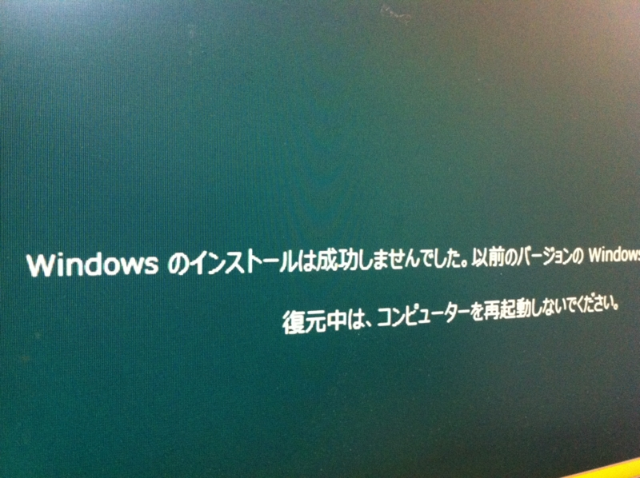
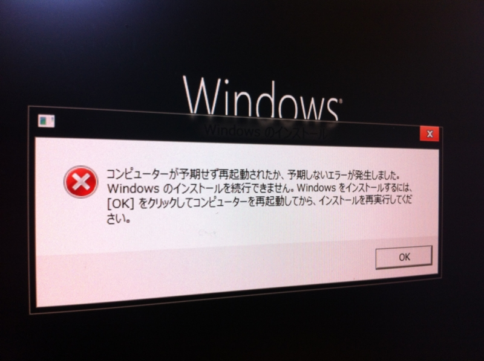
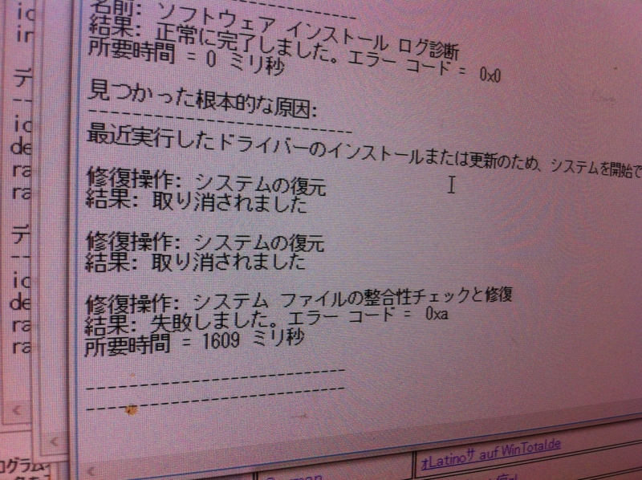

なんかインストールでコケるんですけど！
公開日：
Windows 8 Release Preview とか Visual Studio 2012 とか、いろいろ一気にできました。徹夜でインストールや！
- 窓の杜 - 【NEWS】Microsoft、「Windows 8 Release Preview」の一般提供を開始
- 窓の杜 - 【NEWS】Microsoft、「Visual Studio 2012」および「.NET Framework 4.5」のRC版を公開
けれど、うちの環境（Ivy Bridge世代Core i5＋内臓GPU）ではいくつか不具合が。 Windows 8 Consumer Preview では問題なくインストールできていた環境なので、 Release Preview でコケとは思わなかった……。


仮想マシンで済ましてもよかったのだけど、やはり実機で体験したかったということもあり、結局、古いPC（Core 2 Duo＋内臓GPU）を引っ張り出してインストール。こっちはすんなり行きました。

お昼に力尽きて夕方まで寝て、起きてから少し原因を調べてみたのだけど、どうもドライバー、とくにグラフィックドライバーのせいなのかな、という気がする*1。 Consumer Preview のときも、たまにフリーズしていたし。あと、キーボードを日本語配列でインストールしたつもりが、なぜか英語配列になってる。まぁ、これは英語キーボードに差し替えて解決。もともと英語配列のキーボードのほうが好きでしたしね*2。
まぁ、新しいソフトを試すときは、若干枯れた環境でやるとよい、という教訓を再確認。